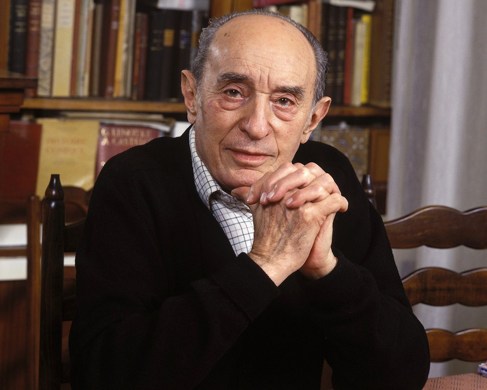

Pierre Boulle

Escritor francês • 1912–1994
Pierre François Marie Louis Boulle nasceu em Avignon, na França, em 20 de fevereiro de 1912. Formou-se engenheiro e, antes de se dedicar principalmente à literatura, trabalhou em uma plantação de borracha na Malásia. Com o início da Segunda Guerra Mundial, sua trajetória mudou: serviu no Sudeste Asiático e depois atuou ligado à França Livre, realizando missões de inteligência e atividades clandestinas. Em 1943 foi capturado, mas conseguiu escapar em 1944. As experiências da guerra marcaram sua carreira literária e ajudaram a formar a visão crítica presente em parte de sua obra. Após a guerra, passou a publicar romances e contos, construindo uma carreira que combinava aventura, ficção, sátira e reflexão social.
Seu primeiro romance publicado foi William Conrad, em 1950. Entre suas obras mais conhecidas está Le Pont de la rivière Kwaï (A Ponte sobre o Rio Kwai), de 1952, inspirado no contexto da Segunda Guerra Mundial, e La Planète des singes (O Planeta dos Macacos), de 1963. Boulle morreu em Paris, em 30 de janeiro de 1994, aos 81 anos. Sua produção continuou relevante por abordar conflitos humanos por meio de situações imaginativas. O Planeta dos Macacos tornou-se especialmente conhecido por inverter a relação entre humanos e primatas e questionar o que define uma espécie como civilizada ou superior. A obra foi adaptada para o cinema em 1968, dando origem a uma extensa franquia. O próprio Boulle preferia tratar seus livros desse tipo como uma forma de “fantasia social”, usando elementos extraordinários para observar problemas da sociedade humana.